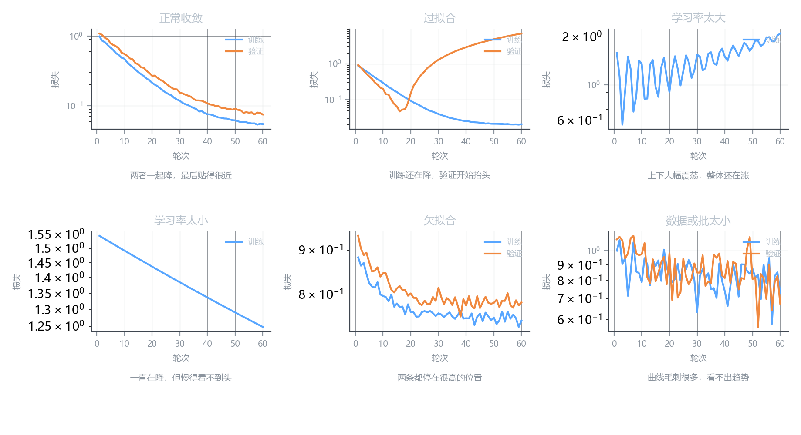
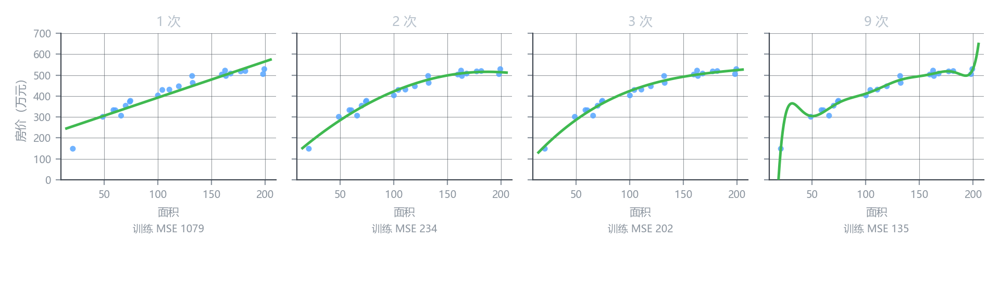

额外拓展
一、画图是个好习惯
训练跑起来之后，损失曲线就是你的仪表盘。
不画图的人怎么判断训练得好不好？只能看最后那个数。但最后那个数什么也说明不了——它可能是收敛后的稳态，也可能是刚刚开始下降，还可能是在震荡中被你碰巧看到的一个低点。
画出来，一眼就知道。
六种常见形态

| 你看到的 | 病因 | 怎么办 |
|---|---|---|
| 两条一起降，最后贴得很近 | 正常 | 继续，或者可以停了 |
| 训练还在降，验证开始抬头 | 过拟合 | 早停、加正则、加数据 |
| 剧烈震荡，整体还在往上 | 学习率太大 | 缩小 10 倍 |
| 一直在降但慢得看不到头 | 学习率太小 | 放大 3–10 倍 |
| 两条都停在很高的位置 | 欠拟合 | 加特征、换更复杂的模型 |
| 毛刺极多，看不出趋势 | 批太小 / 数据太脏 | 增大 batch、检查数据 |
只画训练损失是不够的——它几乎只会下降，看不出任何问题。
训练 + 验证两条线的关系，才是信息所在。 它们之间的缝（gap）就是过拟合的程度。
什么时候可以停
看验证损失，不看训练损失：
- 验证损失连续若干轮不再下降 → 停
- 验证损失开始上升 → 立刻停，而且要回到上升前那一轮的模型
这叫早停（early stopping）。它是性价比最高的正则化手段：零成本，只要保存最好的那一轮。
还能画什么
| 图 | 用来看什么 |
|---|---|
| 损失曲线（两条） | 学习率、过拟合、何时停 |
| 预测值 vs 真实值散点 | 模型在哪些区间系统性偏高或偏低 |
| 残差分布 | 有没有系统性偏差（比如总是低估大房子） |
| 参数分布 | 权重是不是失控地变大了 |
二、特征工程
你已经有的特征，未必是模型最容易用的形式。
特征工程（feature engineering）就是：在原始特征的基础上，造出新的特征。 造出来的特征不增加信息，但换个形状，模型可能一下就学得动了。
一个具体例子
两套房，面积都是 100 ㎡：
| 房源 | 面积 | 卧室数 | 直觉上 |
|---|---|---|---|
| A | 100 | 2 | 每个卧室 50 ㎡，宽敞 |
| B | 100 | 5 | 每个卧室 20 ㎡，局促 |
如果模型只有 w_1 \cdot \text{面积} + w_2 \cdot \text{卧室数}，它必须靠调整 w_1, w_2 去凑出”宽敞”这件事——但”宽敞”其实是两个量的比值。
造一个新特征：
x_3 = \frac{\text{面积}}{\text{卧室数}}
A 是 50，B 是 20。模型只要给 x_3 一个正权重，立刻就能区分这两套房。
模型能算的是 w_1x_1 + w_2x_2 + \dots——每个特征单独加权，再加起来。
它做不了除法、做不了乘法、做不了比较。
所以凡是”比值”、“乘积”、“差值”、“是否大于”这类关系，你得手动造出来，模型才看得见。
常见的造法
| 造法 | 例子 | 适用 |
|---|---|---|
| 比值 | 面积/房间数、价/面积 | 单位化某种量 |
| 乘积 | 楼层 × 有无电梯 | 交互效应 |
| 差值 | 今年 − 建成年份 | 时间差 |
| 计数 | 文本里感叹号个数 | 文本统计 |
| 拆解 | 日期 → 星期几 / 季度 / 是否节假日 | 周期规律 |
| 分箱 | 年龄 → 0-18 / 19-35 / 36-60 | 非线性关系 |
| 组合 | 楼层 × 朝向 | 交叉特征 |
“楼层 × 有无电梯”这个例子值得琢磨：单独看，高层应该更贵；但如果那栋楼没电梯，高层反而难卖。两个特征一起看才有意义——这种叫交叉特征。
不是什么都能加
| 风险 | 说明 |
|---|---|
| 共线性 | 造出”面积×1000”这种和原特征完全等价的东西，只会让权重无法解释 |
| 过拟合 | 特征越多，模型越容易在训练集上凑出好成绩 |
| 成本 | 每条数据都要多算一遍，上线时难以复现 |
| 泄漏 | 用了全量数据的统计量（比如全量均值）造特征 → 数据泄漏 |
深度学习的卖点之一就是”自动学特征”：扔进原始像素，网络自己学出边缘、纹理、形状。
但表格数据上，人工特征工程至今仍然很强。Kaggle 上的结构化数据比赛，赢家大部分时间花在造特征，而不是换模型。
原因很实在：表格数据里，领域知识（“这个比值有意义”）比通用结构更有效。
三、多项式回归
上一节最直接的一种特征工程，是把特征自己乘自己。
模型长什么样
同样的面积，价格明显不是线性的——面积越大，每平米越不值钱（边际递减）。用直线去拟合，两头总会偏：
f(x) = w_1x + b
加一个 x^2：
f(x) = w_1x + w_2x^2 + b
再加 x^3：
f(x) = w_1x + w_2x^2 + w_3x^3 + b
这就是多项式回归（polynomial regression）。
这一点最容易搞混。
“线性”指的是对参数线性——w_1, w_2, w_3 都是一次方，没有 w_1w_2、没有 w_1^2。
从模型的角度看，x 和 x^2 就是两个普通的特征，只不过第二个是你用第一个算出来的。
所以：代码不用改。把 x^2 当成一个新列塞进特征矩阵，原来的梯度下降、正规方程，原封不动都能用。
阶数的影响
用同一批数据，分别拟合 1 次、2 次、3 次、9 次：

| 阶数 | 训练 MSE | 现象 |
|---|---|---|
| 1 | 1079 | 一条直线，两端明显偏——欠拟合 |
| 2 | 234 | 抓住了弯曲的趋势，明显更好 |
| 3 | 202 | 和 2 次几乎一样，多的一项没带来明显收益 |
| 9 | 135 | 训练 MSE 最低，但曲线在两端乱翘 |
它的训练 MSE 是最低的（135），但你能看到它在 x < 40 的地方猛地扎下去，在 x > 180 的地方又翘起来。
那些地方根本没有数据点。模型在那里纯粹是在编。
这就是过拟合的经典形态：训练集上的分数越来越好，模型的形状越来越离谱。
如果你只看”训练 MSE 从 1079 降到 135”，会以为 9 次最好。看了图就知道不是。
怎么选阶数
不看训练 MSE，看验证集。
做法很朴素：把 1、2、3、4、5 次都试一遍，各自算验证集上的误差，选验证误差最小的那个。
一般规律：
- 数据少、噪声大 → 阶数要低（1 或 2）
- 数据多、关系确实弯曲 → 可以试到 3、4
- 再高基本没意义，不如换模型
两个坑
坑一：必须做特征缩放。
x = 150 时，x^2 = 22500，x^9 \approx 3.8 \times 10^{19}。
如果不缩放，这些列的量级差二十个数量级，梯度下降根本跑不动——正是上一课那个病态问题的极端版本。
坑二：高次项会把数值推向极端。
即使做了标准化，阶数很高时在数据范围之外预测，结果会瞬间爆炸。所以多项式回归不适合外推——它只能在你见过的区间里可信。
它和特征工程的关系
多项式回归不是一个新算法，它就是特征工程的一个特例：
- 造 x^2、x^3 两列新特征
- 然后跑普通的线性回归
同样的思路还能造：
x_3 = x_1 \times x_2 \quad\text{（交叉项）}, \qquad x_4 = \log(x_1), \qquad x_5 = \sqrt{x_1}
只要新特征是从旧特征算出来的确定函数，都可以这么塞进去。
这一课的小结
| 主题 | 一句话 |
|---|---|
| 画图 | 损失曲线是训练的仪表盘；训练和验证必须一起画 |
| 何时停 | 验证损失不再下降就停，早停是最便宜的正则化 |
| 特征工程 | 在原始特征上造新特征，让模型看得见比值、乘积、交互 |
| 为什么有用 | 线性模型只会”加权求和”，做不了除法乘法比较 |
| 多项式回归 | 造 x^2, x^3 当新特征，本质仍是线性回归 |
| 阶数选择 | 看验证集，不看训练集；高次必过拟合 |
| 缩放要求 | 高次项量级爆炸，必须先标准化 |
下一课
第 2、3 章讲完了线性回归的整套原理：模型、损失、梯度、学习率、多特征、缩放、诊断、特征工程。
但模型还是那条直线（或者你手动弯出来的曲线）。
下一章换一种完全不同的思路：用概率的方式做分类——逻辑回归。它的输出不再是价格，而是”这封邮件是垃圾的概率”。